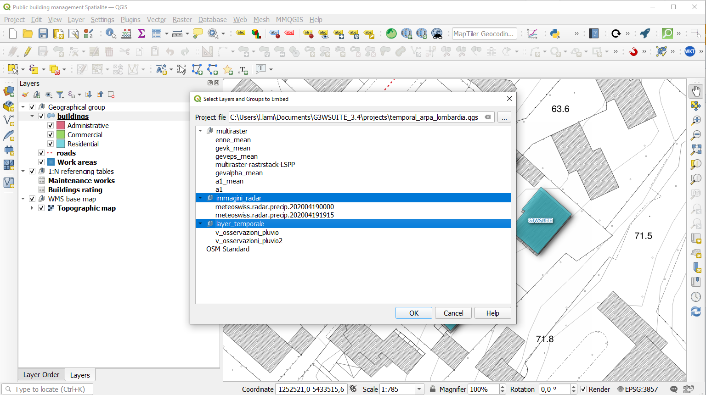
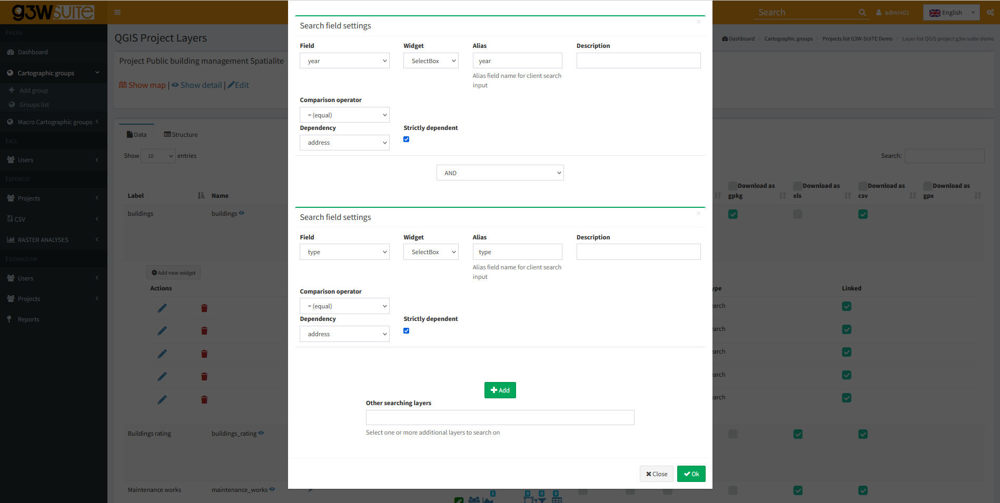
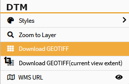
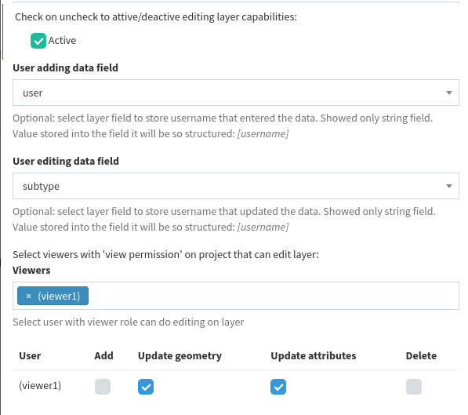
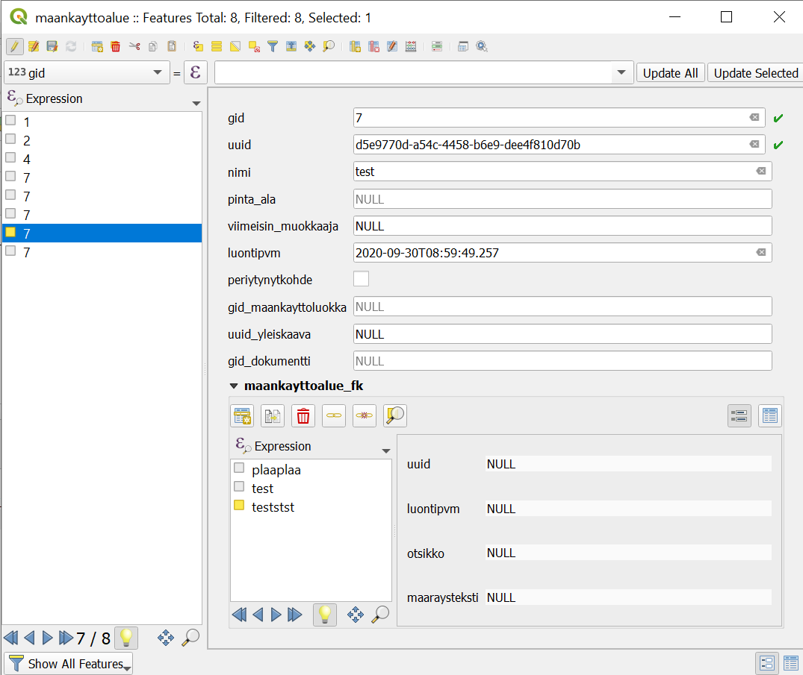
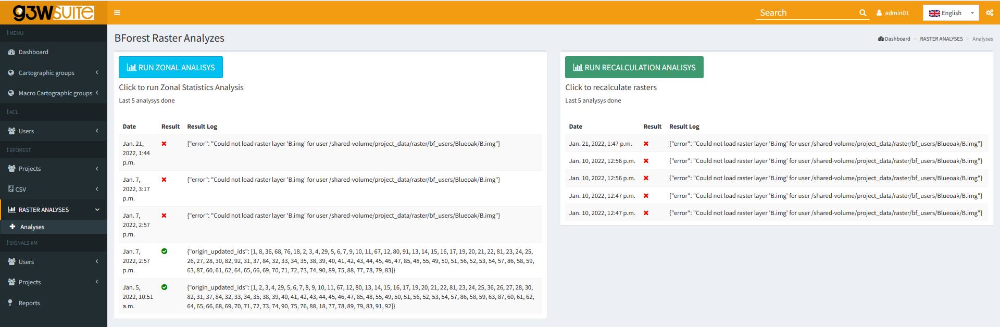
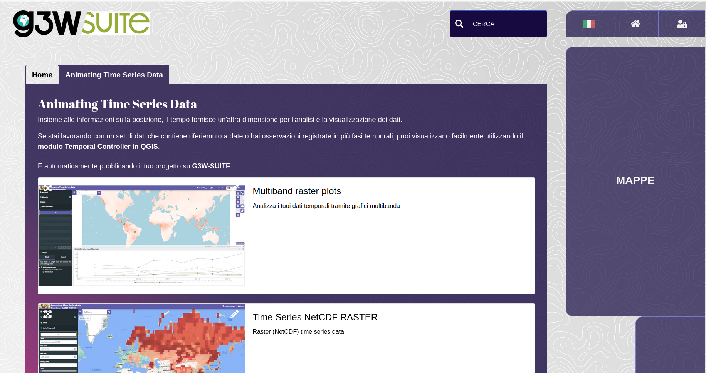

Changelog G3W-Suite 3.4
Release date: 5 April 2022
Changelog for G3W-SUITE 3.4
G3W-SUITE 3.4 offers an extensive list of new and improved features – the most important shown here:
- embedded project management
- drill-down cascading and conditional forms on edit
- add custom external WMS services plugin
- vector and raster time series visualization
- multiband raster plots
We hope you enjoy this great work!
Happy mapping!
Sponsor and funder
G3W-SUITE is an open source project and if you are able to, consider supporting our work through donations or contributions to the code documentation, web site and so on. Among the main funder of this version we remember:


General
Feature: QGIS 3.22 LTR support
G3W-SUITE 3.4 is compatible with the new LTR of QGIS
Feature: Embedded projects
Setting inherited from the QGIS project
G3W-SUITE now manages the publication of projects with embedded groups/layers from other projects.
Updating the “parent” project will result in updating all projects with embedded layers.

Feature: Searches: new management of dependencies between fields
Now it is possible to define the dependence more or less strong (strictly).
In case of strictly dependence, the values of the dependent fields will be loaded only after the choice of the value of the field on which the dependency depends.
Otherwise it will be possible to define the values of the individual fields freely and without a specific order. The values available for the other fields will in any case depend on the choice made.

Feature: User-based fields filter
It is possible to define filters for the single layers of a project (based on single/group users) which define the visibility of the attributes (fileds) of the layer itself.
Also available for public user (AnonymusUser)
Feature: Parameterized URLs for direct zoom to extensions / layers / features
It is possible to create parameterized URLs for direct zomming to:
- geographical extension
- single feature by FID
- single/list features by value of a field
Cartographic Client
Feature: Add external WMS to the WebGis
The user can add custom WMS layers to the WebGis service.
The list of WMS services and the specific WMS layers added will remain available to the user until the browser cache is cleared.
Feature:�Data download
Now it is possible to allow the download of raster data in GeoTiff format.
Entire layer or clipped to the extent of the canvas.

Feature: Custom titles in print
Setting inherited from the QGIS project
Using the ItemIDs at the print layout level of the QGIS project it is possible to insert one or more labels with customized content in the print from WebGis
Editing
Feature: Drill-down (cascading) forms
Setting inherited from the QGIS project
Drill-down (cascading) forms based on QGIS expressions are now supported and implemented for online editing.
The functionality can be used to implement �drill-down� within editing forms, where the values available in one field depend on the values of other fields.
This function will be reflected in the consultation side.
Feature: Conditionals forms
Setting inherited from the QGIS project
Conditional forms based on QGIS expressions are now supported and implemented for online editing/consulting.
Feature: User association
Automatic compilation of fields of the attribute table with user creator/modifier of the features.

Feature: Start editing directly from query/search results
It is possible to go directly from consulting the attributes of a feature to editing it.
Feature: 1:N relations without nesting limits
Setting inherited from the QGIS project
1:N relations are managed in cascade without nesting limits (consultation and editing)
Improved and modified the management of 1:N related data editing (no longer via TAB)
Feature: N:M relations
Setting inherited from the QGIS project
The management of N:M relations defined on QGIS project is now supported.
Limitation in editing: non-direct changes on M table

Feature: Measurement tools on editing
It is now possible to misure interactively the segments length and the polygons area on the map during the editing phase.
Analysis tools
Feature: Temporal controller and Raster Time series
Setting inherited from the QGIS project
Animating Time Series Data on WebGis!
The QGIS temporal controller functions are now managed on the WebGis side.
Compatibility is currently valid for NetCDF formats.
Feature: Temporal controller and Vector Time series
Setting inherited from the QGIS project
Animating Time Series Data on WebGis!
The QGIS temporal controller functions are now managed on the WebGis side.
Compatibility is currently valid for vector data (Single Filed with Date / Time option only).
Feature:�Multiband raster plots
Analyze your multiband data through time charts!
Feature:�Geographic analysis
Implemented a generic method for using the Processing API for geographic data analysis directly on WebGis.
The use of the individual Porcessing modules requires the implementation of dedicated client/server modules for use on the cartographic client side.

Minor improvements
Feature: Set WebGis services order on�the FrontEnd
Using drag&drop in the ADMIN session it’s now possible to define the order of the WebGis services at the FrontEnd level.

Per il dettaglio completo consulta il manuale ufficiale su ReadTheDocs.